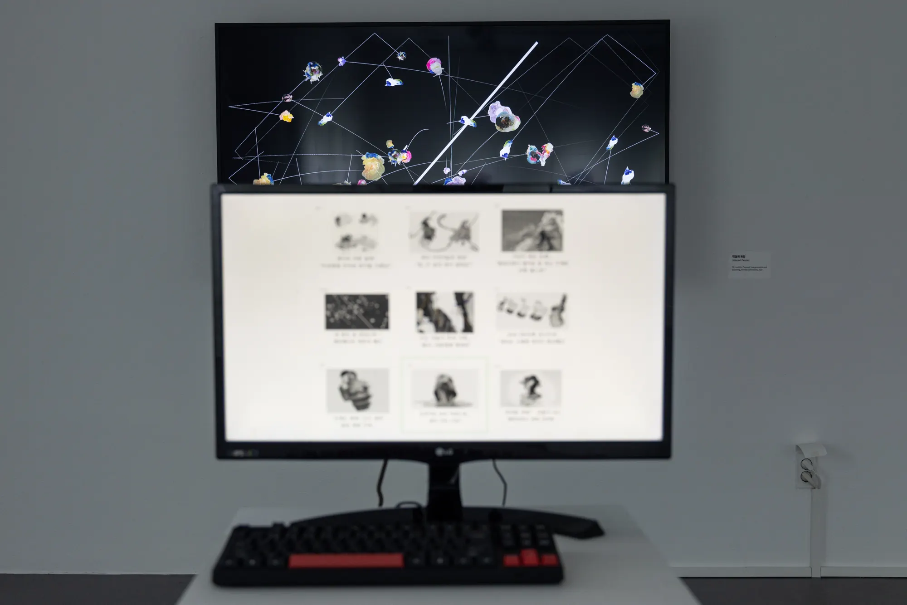
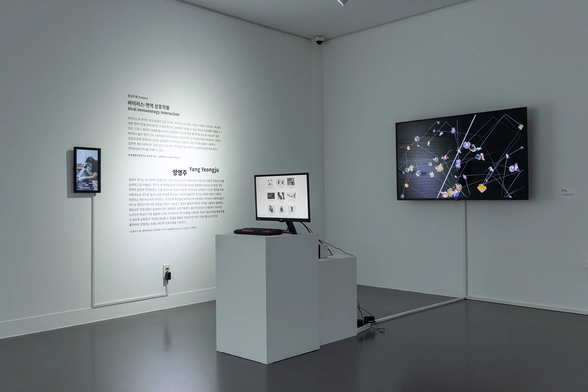
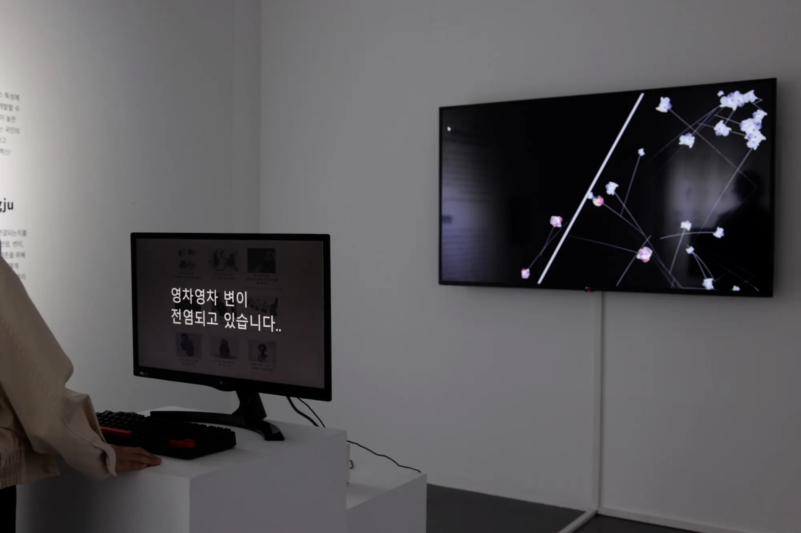
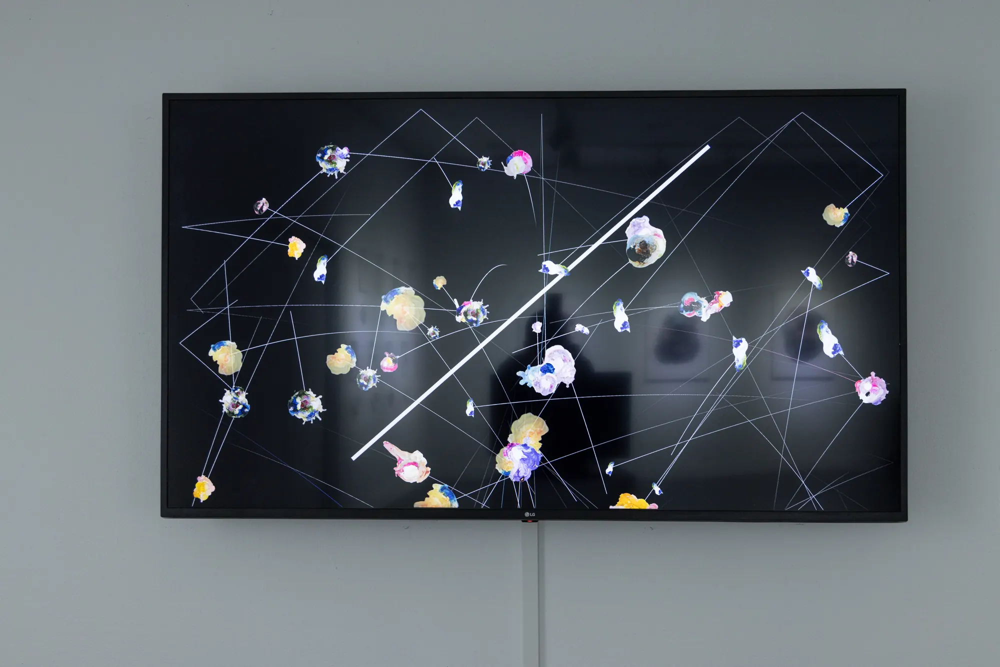

Infected Desires
Interactive installation, 2024
- Shown at
- Artience Daejeon 2024, Daejeon Culture and Arts Foundation × KRIBB, Daejeon, 2024.10
- Materials
- PC, monitors, pedestal, live image generation and screening, interpretation card, sound, variable dimensions
- In collaboration with
- Dr. Jihyun Yang, Dr. Doojin Kim (KRIBB)

Infected Desires is an interactive installation that explores desire as a viral force spreading through media environments, digital networks, and collective imagination.
Based on fictional news articles developed with virology researchers, participants select a desire from article-like thumbnails. The selected desire is transformed through a live image-generation process and projected as a new visual entity.
These entities move through a dynamic field resembling an artificial immune system, continuously seeking new paths of transmission.


